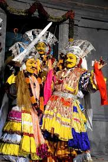
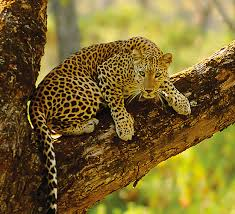
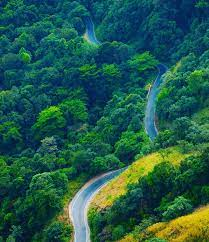
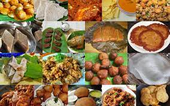
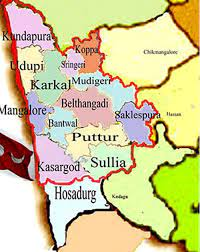

Tulu tradition encompasses a rich cultural heritage rooted in the coastal region of Karnataka and Kerala, celebrated through vibrant folklore, dance, music, and distinct rituals passed down through generations.
Tulunadu, the coastal region of Karnataka and Kerala, is blessed with diverse wildlife, including lush forests and a variety of animal species such as elephants, tigers, wild boars, and various avian species.
Tulunadu's nature is a breathtaking amalgamation of lush green landscapes, pristine beaches, abundant wildlife, and a unique biodiversity that thrives in its diverse ecosystems.
Tulunadu literature comprises a diverse body of writings in Tulu language, reflecting the region's unique history, folklore, social dynamics, and contemporary issues, showcasing a rich literary tradition
Tulu Nadu, a region in the southwestern part of Karnataka, India, has a rich culinary heritage. The cuisine of Tulu Nadu is diverse, flavorful, and heavily influenced by its coastal location.
Tulu Nadu doesn't refer to a specific kingdom in the traditional sense; rather, it is a cultural region in the southwestern part of Karnataka, India. Historically, this region was known for its rich cultural heritage, language (Tulu), and unique traditions.